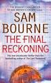
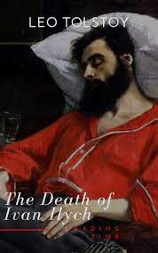
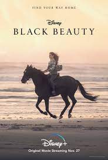
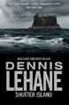
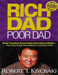

Living in the Light: A Guide to Personal and Planetary Transformation by Shakti Gawain
3.5/5
In Living in the Light, Shakti Gawain introduced a powerful new way of life:
that of listening to one's own intuition and relying on it as a guiding force.

Give and Take: A Revolutionary Approach to Success by Adam Grant
3.9/5
An innovative, groundbreaking book that will captivate readers of Malcolm Gladwell, Daniel Pink,
The Power of Habit, and Quiet For generations, we have focused on the individual drivers of success:
passion, hard work, talent, and luck. But today, success is increasingly dependent on how we interact with others.

I Am Malala: The Girl Who Stood Up for Education and Was Shot by the Taliban by Christina Lamb and Malala Yousafzai
4.1/5
I Am Malala: The Story of the Girl Who Stood Up for Education and was Shot by the Taliban
is an autobiographical book by Malala Yousafzai, co-written with Christina Lamb.
It was published on 8 October 2013, by Weidenfeld & Nicolson in the UK and Little, Brown and Company in the US.

The Final Reckoning by Sam Bourne
4.4/5
The new high-concept thriller from the number one bestselling author of The Righteous Men and The Last Testament.
Tom Byrne has fallen from grace since his days as an idealistic young lawyer in New York.

Da Vinci Code by Dan Brown
4.6/5
The Da Vinci Code is a 2003 mystery thriller novel by Dan Brown.
It is Brown's second novel to include the character Robert Langdon: the first was his 2000 novel Angels & Demons.
Harry Potter and the Prisoner of Azkaban by J. K. Rowling
4.9/5
Harry Potter and the Prisoner of Azkaban is a fantasy novel written by British author J. K. Rowling
and is the third in the Harry Potter series. The book follows Harry Potter, a young wizard,
in his third year at Hogwarts School of Witchcraft and Wizardry.

The Death of Ivan Ilyich by Leo Tolstoy
4.1/5
The Death of Ivan Ilyich, first published in 1886, is a novella by Leo Tolstoy,
considered one of the masterpieces of his late fiction, written shortly after his religious
conversion of the late 1870s.

Black Beauty by Anna Sewell
4/5
Probably the most popular horse story of all time, Black Beauty tells the story of one horse's long
and varied life. On the one hand, a fully engaging novel and on the other hand, a strong statement
against animal maltreatment. Anna Sewell's classic novel has enthralled readers since it was first published in 1877.

Shutter Island by Dennis Lehane
4.4/5
Shutter Island is a novel by American writer Dennis Lehane, published by Harper Collins in April 2003.
A film adaptation was released in February 2010. Lehane has said he sought to write a novel that would
be an homage to Gothic settings, B movies, and pulp.

Rich Dad Poor Dad by Robert Kiyosaki and Sharon Lechte
4.7/5
Rich Dad Poor Dad is a 1997 book written by Robert Kiyosaki and Sharon Lechter. It advocates the importance
of financial literacy, financial independence and building wealth through investing in assets,
real estate investing, starting and owning businesses, as well as increasing one's financial intelligence.